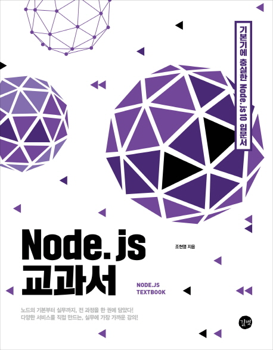

# Node.js 교과서

Node.js를 체계적으로 봐야겠다는 생각에 인터넷에서 평점이 높고, 판매부수가 많은 이 책을 구매하였다.
# 목차 및 요약
- 1 장 노드 시작하기
review(2019.02.15)- 1.1 핵심 개념 이해하기
- 1.1.1 서버
- 1.1.2 자바스크립트 런타임
- 1.1.3 이벤트 기반
- 1.1.4 논블로킹 I/O
- 1.1.5 싱글 스레드
- 1.2 서버로서의 노드
- 1.3 서버 외의 노드
- 1.4 개발 환경 설정하기
- 1.4.1 노드 설치하기
- 1.4.2 npm의 버전 업데이트하기
- 1.4.3 VS Code 설치하기
- 1.5 함께 보면 좋은 자료
- 1.1 핵심 개념 이해하기
- 2장 알아두어야 할 자바스크립트
review(2019.02.17)- 2.1 ES2015+
- 2.1.1 const, let
- 2.1.2 템플릿 문자열
- 2.1.3 객체 리터럴
- 2.1.4 화살표 함수
- 2.1.5 비구조화 할당
- 2.1.6 프로미스
- 2.1.7 async/await
- 2.2 프런트엔드 자바스크립트
- 2.2.1 AJAX
- 2.2.2 FormData
- 2.2.3 encodeURLComponent, decodeURLComponent
- 2.2.4 data attribute와 dataset
- 2.3 함께 보면 좋은 자료
- 2.1 ES2015+
- 3장 노드 기능 알아보기
- 3.1 REPL 사용하기
- 3.2 JS 파일 실행하기
- 3.3 모듈로 만들기
- 3.4 노드 내장 객체 알아보기
- 3.4.1 global
- 3.4.2 console
- 3.4.3 타이머
- 3.4.4 filename, dirname
- 3.4.5 module, exports
- 3.4.6 process
- 3.5 노드 내장 모듈 사용하기
- 3.5.1 os
- 3.5.2 path
- 3.5.3 url
- 3.5.4 querystring
- 3.5.5 crypto
- 3.5.6 util
- 3.6 파일 시스템 접근하기
- 3.6.1 동기 메서드와 비동기 메서드
- 3.6.2 버퍼와 스트림 이해하기
- 3.6.3 기타 fs 메서드
- 3.7 이벤트 이해하기
- 3.8 예외 처리하기
- 3.9 함께 보면 좋은 자료
- 4장 http 모듈로 웹 서버 만들기
- 4.1 요청과 응답 이해하기
- 4.2 쿠키와 세션 이해하기
- 4.3 REST API와 라우팅
- 4.4 https와 http2
- 4.5 cluster
- 4.6 함께 보면 좋은 자료
- 5장 패키지 매니저
- 5.1 npm 알아보기
- 5.2 package.json으로 패키지 관리하기
- 5.3 패키지 버전 이해하기
- 5.4 기타 npm 명령어
- 5.5 패키지 배포하기
- 5.6 함께 보면 좋은 자료
- 6장 익스프레스 웹 서버 만들기
- 6.1 Express-generator로 빠르게 설치하기
- 6.2 익스프레스 구조 이해하기
- 6.3 미들웨어
- 6.3.1 커스텀 미들웨어 만들기
- 6.3.2 morgan
- 6.3.3 body-parser
- 6.3.4 cookie-parser
- 6.3.5 static
- 6.3.6 express-session
- 6.3.7 connect-flash
- 6.4 Router 객체로 라우팅 분리하기
- 6.5 템플릿 엔진 사용하기
- 6.5.1 Pug(Jade)
- 6.5.2 EJS
- 6.5.3 에러 처리 미들웨어
- 6.6 함께 보면 좋은 자료
- 7장 MySQL
- 7.1 데이터베이스란?
- 7.2 MySQL 설치하기
- 7.2.1 윈도
- 7.2.2 macOS
- 7.2.3 리눅스(우분투)
- 7.3 워크벤치 설치하기
- 7.3.1 윈도
- 7.3.2 macOS
- 7.3.3 리눅스(우분투)
- 7.3.4 커넥션 생성하기
- 7.4 데이터베이스 및 테이블 생성하기
- 7.4.1 데이터베이스 생성하기
- 7.4.2 테이블 생성하기
- 7.5 CRUD 작업하기
- 7.5.1 Create(생성)
- 7.5.2 Read(조회)
- 7.5.3 Update(수정)
- 7.5.4 Delete(삭제)
- 7.6 시퀄라이즈 사용하기
- 7.6.1 MySQL 연결하기
- 7.6.2 모델 정의하기
- 7.6.3 관계 정의하기
- 7.6.4 쿼리 알아보기
- 7.6.5 쿼리 수행하기
- 7.7 함께 보면 좋은 자료
- 8장 몽고디비
- 8.1 NoSQL vs SQL
- 8.2 몽고디비 설치하기
- 8.2.1 윈도
- 8.2.2 macOS
- 8.2.3 리눅스(우분투)
- 8.3 컴퍼스 설치하기
- 8.3.1 윈도
- 8.3.2 macOS
- 8.3.3 리눅스(우분투)
- 8.3.4 커넥션 생성하기
- 8.4 데이터베이스 및 컬렉션 생성하기
- 8.5 CRUD 작업하기
- 8.5.1 Create(생성)
- 8.5.2 Read(조회)
- 8.5.3 Update(수정)
- 8.5.4 Delete(삭제)
- 8.6 몽구스 사용하기
- 8.6.1 몽고디비 연결하기
- 8.6.2 스키마 정의하기
- 8.6.3 쿼리 수행하기
- 8.7 함께 보면 좋은 자료
- 9장 익스프레스로 SNS 서비스 만들기
- 9.1 프로젝트 구조 갖추기
- 9.2 데이터베이스 세팅하기
- 9.3 Passport 모듈로 로그인 구현하기
- 9.3.1 로컬 로그인 구현하기
- 9.3.2 카카오 로그인 구현하기
- 9.4 Multer 모듈로 이미지 업로드 구현하기
- 9.5 프로젝트 마무리하기
- 9.5.1 스스로 해보기
- 9.5.2 핵심 정리
- 9.6 함께 보면 좋은 자료
- 10장 웹 API 서버 만들기
- 10.1 API 서버 이해하기
- 10.2 프로젝트 구조 갖추기
- 10.3 JWT 토큰으로 인증하기
- 10.4 호출 서버 만들기
- 10.5 SNS API 서버 만들기
- 10.6 사용량 제한 구현하기
- 10.7 CORS 이해하기
- 10.8 프로젝트 마무리하기
- 10.8.1 스스로 해보기
- 10.8.2 핵심 정리
- 10.8.3 함께 보면 좋은 자료
- 11 장 웹 소켓으로 실시간 데이터 전송하기
- 11.1 웹 소켓 이해하기
- 11.2 ws 모듈로 웹 소켓 사용하기
- 11.3 Socket.IO 사용하기
- 11.4 실시간 GIF 채팅방 만들기
- 11.5 채팅 구현하기
- 11.6 프로젝트 마무리하기
- 11.6.1 스스로 해보기
- 11.6.2 핵심 정리
- 11.6.3 함께 보면 좋은 자료
- 12장 실시간 경매 시스템 만들기
- 12.1 프로젝트 구조 갖추기
- 12.2 서버센트 이벤트 사용하기
- 12.3 스케줄링 구현하기
- 12.4 프로젝트 마무리하기
- 12.4.1 스스로 해보기
- 12.4.2 핵심 정리
- 12.4.3 함께 보면 좋은 자료
- 13장 구글 API로 장소 검색 서비스 만들기
- 13.1 프로젝트 구조 갖추기
- 13.2 Google Places API 사용하기
- 13.3 Google Maps API 사용하기
- 13.4 위치 기반 검색 수행하기
- 13.5 프로젝트 마무리하기
- 13.5.1 스스로 해보기
- 13.5.2 핵심 정리
- 13.5.3 함께 보면 좋은 자료
- 14장 CLI 프로그램 만들기
- 14.1 간단한 콘솔 명령어 만들기
- 14.2 Commander, Inquirer 사용하기
- 14.3 프로젝트 마무리하기
- 14.3.1 스스로 해보기
- 14.3.2 핵심 정리
- 14.3.3 함께 보면 좋은 자료
- 15장 AWS와 GCP로 배포하기
- 15.1 서비스 운영을 위한 패키지
- 15.1.1 morgan과 express-session
- 15.1.2 sequelize
- 15.1.3 cross-env
- 15.1.4 retire
- 15.1.5 pm2
- 15.1.6 winston
- 15.1.7 helmet, hpp
- 15.1.8 connect-redis
- 15.1.9 nvm, n
- 15.2 Git과 GitHub 사용하기
- 15.2.1 Git 설치하기
- 15.2.2 GitHub 사용하기
- 15.3 AWS 시작하기
- 15.4 AWS에 배포하기
- 15.5 GCP 시작하기
- 15.6 GCP에 배포하기
- 15.7 함께 보면 좋은 자료
- 15.1 서비스 운영을 위한 패키지
- 16장 서버리스 노드 개발
- 16.1 서버리스 이해하기
- 16.2 AWS S3 사용하기
- 16.3 AWS Lambda 사용하기
- 16.4 Google Cloud Storage 사용하기
- 16.5 Google Cloud Functions 사용하기
- 16.6 함께 보면 좋은 자료